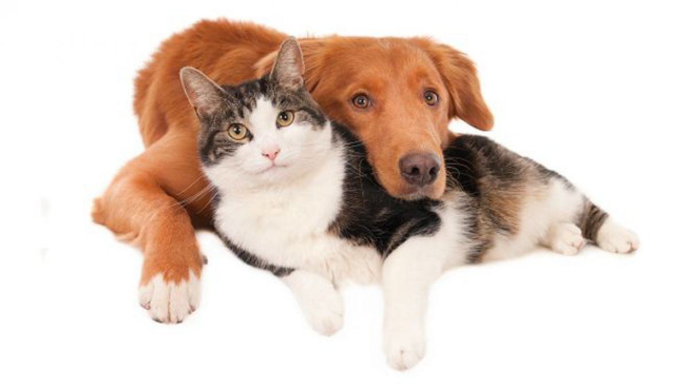

| Comparativas | |
|---|---|
| Perros | Gatos |
 |
|
| Caracteristicas | |
|
|
| Nombres | |
|
|

Axel Ordoñez
Diferencias

7 diferencias entre perros y gatos explicadas con divertidos dibujos A unas personas les encantan los perros. A otras los gatos. A otras los dos. Pero lo que sí es seguro es que todos saben las diferencias entre tener un gato y un perro en casa. Se dice que el perro es el mejor amigo del hombre, que son protectores, cariñosos... En cambio los gatos son diferentes: independientes, limpios, en muchas ocasiones ariscos... Aunque también los hay cariñosos, ojo...